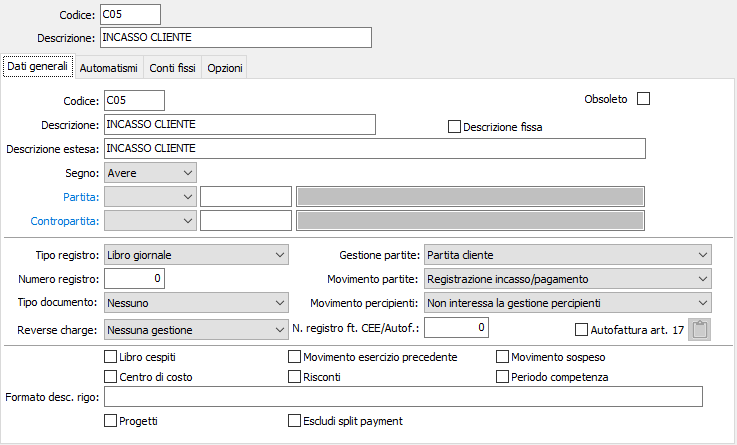
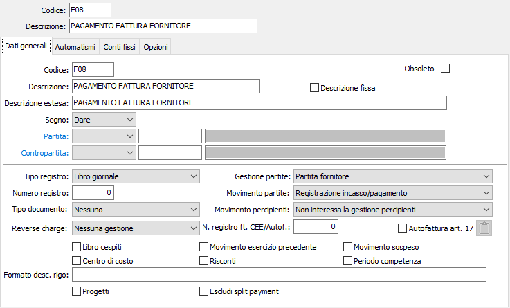
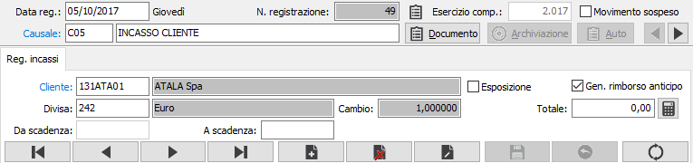
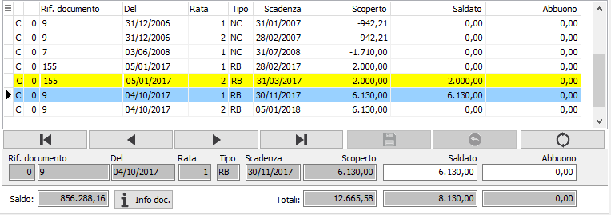
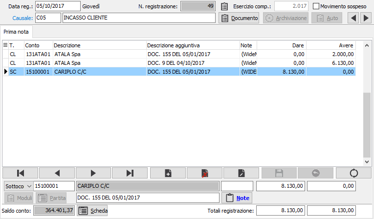

Registrazione incassi/pagamenti
Quando sono attivi i programmi di gestione partite aperte clienti e fornitori, tutte le operazioni contabili attinenti a clienti o fornitori devono essere effettuate tramite causali contabili che determinino una corretta gestione delle partite.
Sono già state esaminate, nei paragrafi precedenti, le operazioni che hanno attinenza con la gestione Iva. Esaminiamo ora le residue operazioni inerenti la contabilità generale, prime fra tutte le registrazioni inerenti gli incassi ed i pagamenti effettuate manualmente tramite il programma Gestione prima nota. La precisazione è d'obbligo perché alcune di queste registrazioni (saldo cliente tramite effetto; saldo fornitore tramite bonifico, assegno circolare, assegno di traenza o ritiro effetti) potrebbero essere effettuate automaticamente tramite programmi dei moduli Effetti attivi o Pagamenti fornitori.
Il programma presenta le scadenze (ovvero le rate in cui possono essere suddivise le partite) aperte per i clienti o i fornitori in esame. Le scadenze vengono sempre presentate nella divisa di origine del documento ed il programma provvede a determinare automaticamente gli eventuali utili o perdite su cambi sulla base delle differenze fra il cambio inserito all'atto della registrazione del documento e il cambio inserito all'atto della registrazione del pagamento.
È possibile pagare o incassare più scadenza dello stesso fornitore/cliente in unica soluzione. Quando un importo pagato / incassato non corrisponde allo scoperto della relativa scadenza per una differenza pari o inferiore alla cifra definita nel campo Massimo valore abbuono della Tabella di Configurazione Partite Aperte, il programma calcola automaticamente uno sconto o abbuono a saldo totale della scadenza.
È possibile nella stessa registrazione contabile effettuare pagamenti / incassi multipli, ovvero relativi a più fornitori o a più clienti. A questo proposito sono significativi i check-box Generazione contropartite incassi e Generazione contropartite pagamenti della Tabella di Configurazione Partite Aperte. Se i due check box sono privi di spunta, l'articolo contabile presenterà il totale degli importi pagati / incassati in un unico rigo di sottoconto finanziario; viceversa, se i due check box contengono la spunta, l'articolo contabile genererà una singola contropartita finanziaria per ciascun fornitore / cliente elencato nell'articolo stesso.
Per gestire correttamente questo tipo di registrazioni occorre che nella Tabella Codici fissi di Configurazione applicazione siano presenti i codici dei sottoconti Differenza cambi attiva, Differenza cambi passiva, Abbuoni attivi e Abbuoni (sconti) passivi.
Le registrazioni in questione richiedono l'utilizzazione di idonee causali contabili:


L'utente può creare due causali generiche come quelle illustrate, precisando poi al momento delle singole registrazioni il sottoconto di contropartita (Cassa, Banche, ecc), oppure può creare liberamente più causali ciascuna delle quali con descrizione appropriata e l'indicazione di uno specifico sottoconto di contropartita.
Le stesse causali possono essere utilizzate per singoli pagamenti di note credito a clienti o per singoli incassi di note di credito da fornitori: selezionando una singola scadenza di tipo NC (Nota credito) l'importo saldato viene considerato di segno inverso dal programma, che pertanto provvede a saldare la scadenza e a generare una corretta registrazione contabile.
Finestra video Registrazione incassi Registrazione pagamenti
Impostando e confermando la causale, compare immediatamente la finestra video di Registrazione incassi / pagamenti.

CLIENTE (FORNITORE): impostare e confermare il codice del cliente o del fornitore, presente nella rispettiva anagrafica. A conferma vengono automaticamente completati i campi divisa e cambio.
ESPOSIZIONE: check box per abilitare la visualizzazione delle scadenze esposte. Per quanto riguarda le scadenze attive a mezzo effetto (RB, Tratta, Cessione), normalmente vengono visualizzate le scadenze non presentate in banca per l'incasso. La spunta del check box determina la visualizzazione anche delle scadenze esposte, ovvero degli effetti già presentati per l'incasso.
TOTALE: è possibile indicare l'importo totale incassato; premendo il pulsante a lato è possibile assegnare, in concorrenza, l'importo totale incassato alle scadenze aperte in automatico.
Periodo di scadenza: è possibile, specificare in fase di incasso/pagamento per ciascun cliente/fornitore un intervallo di date scadenza (da/a) per la ricerca delle fatture da incassare/pagare.
A conferma vengono visualizzate in divisa di documento le scadenze aperte per il cliente / fornitore e per la divisa indicata. Se un cliente / fornitore avesse più scadenze in divisa diversa, è possibile selezionare una sola divisa per ciascun movimento contabile.
Vengono presentate a video tutte le scadenze per la divisa richiesta, comprese quelle di tipo RB Ricevuta bancaria non ancora presentate all'incasso (e anche quelle presentate all'incasso, se è attiva la spunta sul check box Esposizione). Gli utenti che dispongono del modulo Gestione Effetti Attivi tengano presente che le scadenze clienti di tipo RB, pur presenti, comportano l'emissione automatica degli effetti attivi da parte degli appositi programmi, e che pertanto non si dovrebbe presentare il caso di un pagamento tramite normale registrazione di prima nota.
Il cursore si posiziona sul campo saldato relativo alla prima scadenza visualizzata, evidenziando nella sezione inferiore del video gli estremi del documento attivo.

SALDATO: il campo consente di inserire l'importo del pagamento relativo alla scadenza i cui estremi sono descritti nei campi precedenti. Il rigo attivo è visualizzato anche nella griglia scadenze e in particolare, nella stessa, è contrassegnato dal simbolo freccia all'inizio del rigo. È possibile scorrere, utilizzando i tasti freccia giù o freccia su, i vari righi fino ad individuare la scadenza che si vuole saldare. Individuata la scadenza, il cursore è già posizionato nel campo Saldato. Qui può essere impostato l'importo pagato / incassato. Se tale importo corrisponde esattamente allo scoperto, è possibile compilare automaticamente l'importo saldato richiamandolo automaticamente tramite il tasto funzione F11; deve invece essere impostato a cura dell'utente se fosse di importo inferiore, che, a conferma, viene considerato in acconto sulla scadenza attiva; oppure se di importo superiore, che a conferma darà luogo alla creazione, previa richiesta all'operatore, di un movimento di anticipo per la parte eccedente. I tasti CTRL+F12 consentono di richiamare una finestra dove è possibile effettuare la conversione di importi tra divise diverse e riportare il risultato nel campo corrente.
ABBUONO: se l'importo saldato differisce, rispetto all'importo della scadenza, per una cifra compresa fra i limiti di quella prevista in configurazione applicativo di contabilità come valore massimo abbuono, il residuo viene visualizzato, con segno positivo o negativo, nella colonna abbuono e darà origine ad una rigo contabile di abbuono o sconto attivo o passivo; se, viceversa, si vuole evitare tale scrittura e la chiusura della partita, occorrerà cancellare l'importo dell'abbuono proposto automaticamente dal programma.
Nei campi Totali vengono progressivamente visualizzati la somma degli importi pagati / incassati e la somma degli sconti abbuoni, nella divisa selezionata.
Dopo aver saldato una scadenza, è possibile selezionare una nuova scadenza da pagare, utilizzando i tasti freccia giù o freccia su fini a visualizzare nella sezione di input la scadenza desiderata.
È possibile pagare più scadenze dello stesso cliente o fornitore, compensando anche eventuali Note di credito (identificabili dal Tipo NC), Anticipi (identificabili dal tipo AN).
Completata le selezione delle scadenza incassate/pagate dallo stesso cliente o allo stesso fornitore, l'utente può concludere la registrazione passando alla finestra video prima nota tramite pagina giù, oppure può selezionare un ulteriore cliente/fornitore utilizzando il tasto funzione F12 sul un campo saldato. In questo caso, la finestra video si azzera e il cursore ritorna sul campo Cliente/Fornitore; qui è possibile impostare il codice di un nuovo cliente o fornitore, nel caso in cui si debbano registrare pagamenti multipli, ripetendo la sequenza già descritta per tutti i clienti o fornitori.
Finestra video Prima nota
Concludendo con pagina giù la selezione delle partite dei vari clienti o fornitori interessati al movimento contabile, viene visualizzata la finestra video prima nota, che visualizza il movimento contabile generato: occorrerà solo inserire nell'ultimo rigo della registrazione il codice del sottoconto cassa o banca da utilizzare, nel caso in cui lo stesso non fosse già previsto dalla causale utilizzata.

Registrazioni autonome di sconto o abbuono
Succede spesso che talune partite, per importi superiori a quelli che il programma rileva automaticamente come sconto o abbuono all'atto dei pagamenti, non vengano completamente saldate dal cliente o al fornitore e si debba procedere al loro pareggio tramite registrazioni contabili autonome.
Pur essendo possibile creare apposite causali, eventuali registrazioni autonome di sconti o abbuoni possono essere effettuate anche utilizzando le normali causali di incasso / pagamento illustrate al paragrafo precedente.
La registrazione si sviluppa esattamente come già illustrato per gli incassi / pagamenti. Occorre ovviamente modificare la descrizione dell'operazione proposta dalla causale di incasso / pagamento; nella finestra video Registrazione incassi / pagamenti compaiono gli importi residui delle scadenze che si vogliono portare a sconto o ad abbuono, ed è possibile confermarli esattamente come per l'incasso / pagamento; giunti alla finestra video Prima nota occorrerà evidentemente impostare (o sostituire al codice del sottoconto cassa o banca previsto dalla causale) il codice dei sottoconti Sconti passivi, Abbuoni attivi o simili che si desidera utilizzare.